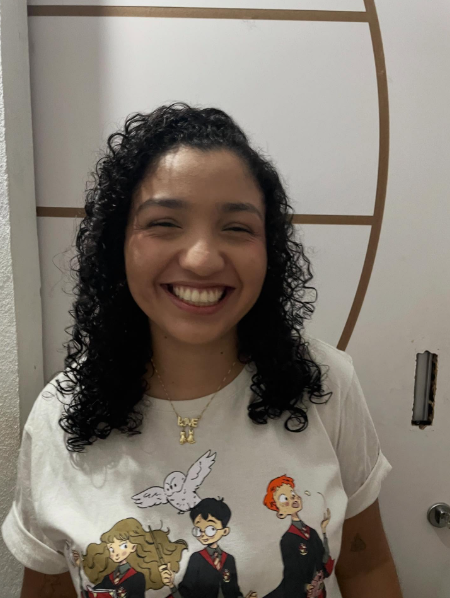
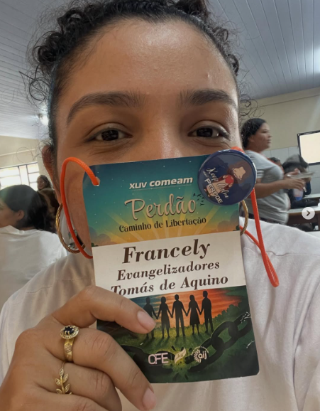
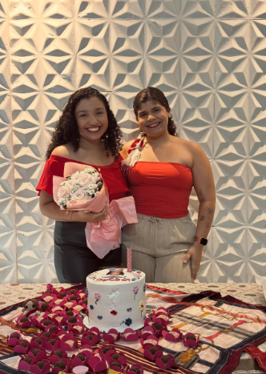
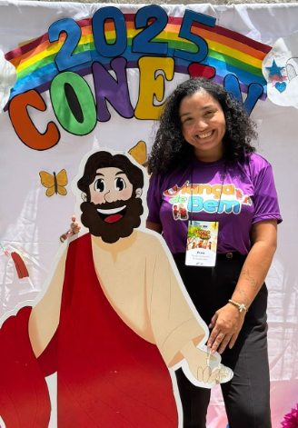

O que o curso "Perdão" me ensinou sobre recomeçar
Um retiro de evangelizadores pode mudar mais do que a sua semana — pode mudar o jeito como você carrega mágoas antigas.
Diário pessoal — Fé · Família · Parintins
Sou Francely Cativo — parintinense, engenheira de produção e evangelizadora. Aqui eu registro o que aprendo evangelizando, o que vivo em família e as histórias que carrego de Parintins.


Sobre mim
Nasci em Parintins, no meio do Amazonas, e é de lá que vem grande parte de quem eu sou — o jeito de festejar, de acolher e de contar histórias. Hoje moro em Manaus, onde atuo como engenheira de produção, com passagem por áreas como qualidade, PCM e melhoria contínua — sempre buscando unir números e pessoas no dia a dia do trabalho.
Esse espaço nasceu para reunir as partes de mim que não cabem só no currículo: a que se dedica à igreja e aos cursos de evangelização, a que celebra a família como o lugar mais importante de tudo, e a que carrega Parintins com orgulho para onde quer que vá. Se você chegou até aqui, seja bem-vindo — fique à vontade pra ler, comentar e voltar sempre.
O que você vai encontrar aqui
Fé, família e raízes parintinenses caminham juntas em cada texto — sem separar quem eu sou em compartimentos diferentes.
Reflexões dos cursos e retiros que participo, aprendizados da vida na igreja e o que significa evangelizar no dia a dia — não só nos eventos.
Histórias de casa, das pessoas (e bichanos) que fazem parte da minha rotina, e dos momentos simples que valem a pena guardar.
Bastidores da rotina em engenharia de produção e melhoria contínua, ao lado da cultura, das festas e do orgulho de ser parintinense.
Últimos textos
Textinhos motivacionais — é só não ficar triste... de nadaaa.
Um retiro de evangelizadores pode mudar mais do que a sua semana — pode mudar o jeito como você carrega mágoas antigas.
Da árvore montada com carinho às receitas que se repetem todo ano — o que o Natal em casa representa pra mim.
Organizar, evangelizar e viver um congresso ao mesmo tempo — os aprendizados de estar dos dois lados do evento.
Por que carrego Parintins comigo mesmo longe de casa, e o que a cultura do Boi-Bumbá me ensinou sobre pertencimento.
Um pouco do dia a dia
Flashes do meu dia a dia — registros novos toda semana.

